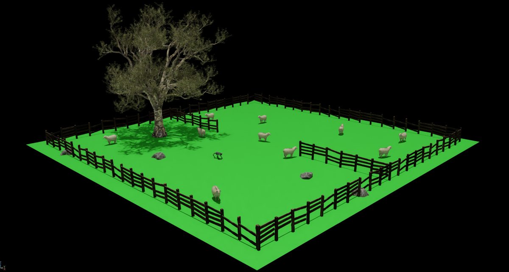
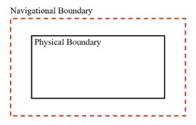
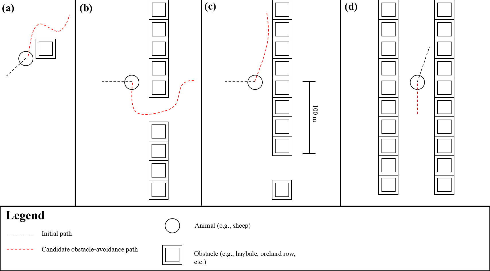
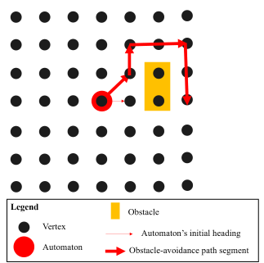
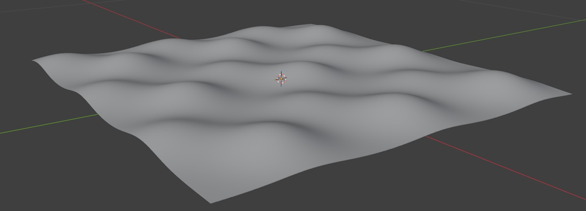
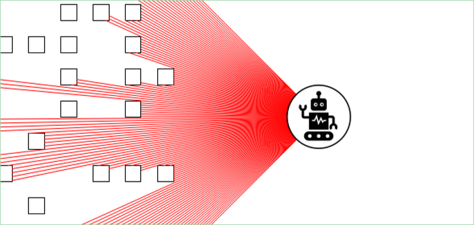

UTAS Capstone Project: Livestock Herding Simulation Environment for Reinforcement Learning
I completed this for my UTAS capstone project (KIT300) along with a small team of students. Our client was a UTAS PhD student whose research is focussed on training robotic platforms for efficient livestock herding. The objective of the project was to build a highly-configurable and modular simulation environment within Isaac Lab to facilitate reinforcement learning and sim-to-real sensitivity studies. Our software supports a 'standard environment' designed for quick experiments, as well as vectorized environments designed for reinforcement learning.
Overall, the project didn't go as smoothly as I had initially hoped. For one thing, Isaac Lab had a very steep learning curve and could be immensely frustrating to use at times. Even in the final weeks of the project, we were rewriting large portions of the codebase. To some extent, I suspect that Isaac Lab wasn't designed for some of the things we wanted to do (for example, our client really wanted the sheep to have rigged walking and running animations, which proved to be an uncommon use-case for Isaac Lab, and gave us many headaches). While we were able to deliver a product that met the client's minimum acceptance criteria, I am somewhat disappointed that that we didn't have the time to properly polish the software. The unit itself was a frustrating experience, and I am very much glad to be done with it.
This page describes some aspects of the project that I worked on (and moreover, the parts that I found the most interesting). In general, I tried to focus on some of the more technical aspects of the project.

Intelligent Reactive Navigation
Intelligent navigation for the environment's automatons (e.g., sheep) was a major focus of mine throughout the project. Its implementation was split into two distinct subtasks: predicting future collisions between the automaton and obstacles, and implementing an obstacle-avoidance algorithm. These respective tasks are discussed in the following subsections.
Note that the contents of the following subsections have been adapted from the formal project reports (the contents of which were somewhat more detailed).
Collision Detection
Before an obstacle navigation algorithm could be implemented, it was necessary to establish a mechanism for predicting collisions between the automaton and obstacles. While it may have been feasible to detect collisions using Isaac Lab's mesh intersection utilities, this would likely have been computationally inefficient, and not conducive to the development of internal algorithms for obstacle avoidance. Instead, the obstacles' boundaries and automaton's headings were abstracted to linear line segments, and collision prediction was implemented by calculating the intersections between these lines.
Obstacle boundaries were defined as a set of linear line segments in the XZ plane (i.e., ground plane), and collision prediction was implemented by calculating the intersection between any of these lines and a sensor ray representing the automaton's current position and heading. The sensor ray was implemented as a linear line in the XZ plane, and therefore collision prediction was computed as the intersection between two linear line segments. Further, because the automatons are not infinitesimally small points, and have acceleration restrictions, collision predictions were computed using a 'navigational boundary' offset from the obstacle's bounding lines by a small distance. For example, if an obstacle's bounding lines approximate a circle, then its navigational boundary would approximate a concentric circle centred on the original bounding lines. An example of this for a rectangular obstacle is shown below. In essence, the navigational boundary prevents the automatons from colliding with obstacles while attempting navigating around them.

Obstacle Navigation Algorithm
For the obstacle navigation algorithm itself, I considered four distinct navigational algorithms: Boids rules, hard-coded behaviour, forcefields, and graph-based shortest-path navigation. I chose to pursue the latter option as it satisfied all of my navigational scenarios (shown in the figure below; scenario A, B, C, and D, respectively). In all cases, the automatons should attempt to navigate around the obstacle while retaining their current heading. The simplest case involves the automaton navigating around a small obstacle in open terrain, such as a tree stump, haybale, or boulder. The second involves the automaton navigating through an opening in a line of obstacles (e.g., an open gate within a fence). The third scenario requires that the automaton steer away from a row of obstacles when a gap either does not exist, or is too far from the automaton's position for it to be aware of the gap. The fourth scenario involves the automaton navigating through rows of obstacles (e.g., orchard rows).

Using graph-based navigation, upon predicting a collision with an obstacle, the automaton was programmed to follow a path determined by traditional graph-based shortest-path navigation. A visibility graph was constructed by generating a finite set of reference points close to the automaton's current position. In a visibility graph, edges exist between vertices if and only if a visible connection exists between them. In this case, a visible connection would exist between vertices if the path between them did not intersect with an obstacle's bounding or navigational lines. Once computed, let this graph be \(G\), with the vertex representing the automaton's starting position labelled \(V_0\).
Once \(G\) has been generated, a target vertex to navigate towards must be selected, denoted \(V_x\). It was desirable for the automaton to retain its current heading, and therefore \(V_x\) was selected stochastically from \(V(G)\), where the weight for \( v \in V(G) \) was given by the similarity between the automaton's current heading vector, and the vector difference between the point represented by \(v\) and the automaton's current location, computed using cosine similarity as follows:
here \(P(v)\) gives the location represented by vertex \(v\), and \(u\) is the vector representing automaton's current heading. Alternatively, \(V_x\) may be selected deterministically, though this probably wouldn't encapsulate the entropic navigation patterns exhibited by animals in the real-world. Note that \(V_x\) cannot overlap with the navigational boundaries of an obstacle, otherwise the animal would collide with the obstacle.
Once \(V_0\) and \(V_x\) are obtained, then the obstacle-avoidance path was found by computing the shortest path through \(G\) between \(V_0\) and \(V_x\). This approach theoretically satisfies all four navigational scenarios. Further, if the placement of vertices was limited appropriately in the spatial domain, \(G\) becomes a proxy for animals' spatially-limited knowledge of obstacles within the environment. Additionally, this approach mimics animals' ability to perform short-term planning for navigation within the environment, as opposed to naïve obstacle avoidance.
An example of a navigational scenario solved using a visibility graph is shown below:

The shortest path through \(G\) was computed using Dijkstra's algorithm using the Euclidean distance between the positions represented by its vertices as edge lengths. Dijkstra's algorithm was chosen for its simple implementation (compared to other shortest path algorithms), since this expedited the implementation of a proof-of-concept obstacle navigation algorithm. Parameters for the graph's density and extent (i.e., span distance within the environment) were added to the configuration file.
The visibility graph was constructed by generating a uniform field of reference points centred around the automaton's current position, and constructing vertices for these reference points. Edges were constructed by considering all pairs of \(u,v \in V(G)\), and checking whether the linear path subtending the positions represented by \({u,v}\) intersected an obstacle.
While this algorithm worked well in a 2D sandbox (albeit with some anomalies), integration into the Isaac Lab codebase was fraught with difficulties. The algorithm was abandoned in favour for a simpler Boids-based approach, whereby obstacles were simply modelled as Boids objects with strong repulsion forces (and no attraction force). The Boids approach wasn't perfect by any means, but at least it worked...
Configurable Non-planar Terrain
Configurable terrain was a desirable feature for our client. Our first attempt at implementing configurable terrain relied-on the user creating a terrain mesh using specialised modelling software (e.g., blender), and saving the mesh file to a specific path within the project, where it would be automatically imported into Isaac Lab at runtime. However, this approach presented some significant problems. Firstly, determining the correct z-axis position for obstacles on a non-planar surface was difficult. Additionally, if the user changed the paddock size (or the number of vectorized environments, as terrain is shared across all environments), then they would have to recreate the terrain mesh. Similarly, simple modifications to the mesh would be time consuming, requiring the user to load the mesh into the modelling software, manually make changes, and re-export the new mesh.
Given the drawbacks of manual terrain creation, we decided to implement procedural terrain generation, whereby the terrain mesh was generated procedurally with minimal effort on behalf of the user. We modelled the terrain as a 2D Gaussian Process (GP) conditioned on a set of control points defined in the project's config file. These control points, \(\omega\), took the form of \((x,y)\to z\), and therefore the terrain elevation at any point, \((x,y)\), within the environment could be computed by calculating \(p((x,y)|\omega)_\mu \), where, as per the definition of a GP, \(p(y_1|y_2) \sim \mathcal{N}(\mu,\sigma^2)\). This facilitates the creation of a smooth terrain mesh that fits the user's control points perfectly. It is also possible to tune the 'sharpness' of the terrain by adjusting the RBF kernel's hyperparameters, which determine the correlation (or influence) that points have on one-another (though, ultimately we did not expose these hyperparameters in the config file). (An alternative approach would be to sample from \(p(y_1|y_2)\) to inject some noise into the terrain contours.)
With the posterior of the GP used to inform the elevation for a grid of points within the environments, generating the terrain mesh was simply a matter of applying procedural mesh generation, a skill I picked-up in KIT307. This was mostly a trivial exercise, marred only by the added complexity of duplicating the mesh across all vectorized environments (and exporting the vertices and triangles arrays to a USD file was also a somewhat involved process).
Obviously, procedural terrain generation requires far less effort on the user's behalf, and naturally extends to variable-sized environments. Conveniently, modelling terrain as GP also solved the problem of determing the z-axis position for obstacles on non-planar terrain (referred to as the get_z function). With our initial solution of loading a user-generated mesh file for the terrain, our get_z function was implemented by raycasting directly downwards onto the terrain mesh at a given \((x,y)\) location, and using the raycast measurement to compute the terrain's elevation at \((x,y)\). However, this method did not work well in the vectorized version of the environment owing to the order in which Isaac Lab creates scene objects. This problem was solved through the use of a GP since the get_z function could simply query the GP at any arbitrary point within the environment to obtain the z-axis position at that point.
The procedural terrain generation worked very well in isolation, but in our experience, Isaac Lab doesn't allow things to 'just work'. When we tried to integrate this feature into Isaac Lab, we encountered issues when cloning GPy objects (which Isaac Lab does automatically for attributes of DirectRLEnvCfg objects for the purposes of environment vectorization). GPy, the library we used for the GP implementation, automatically constructs a large computational graph to compute gradients, which exceeds Python's recursion limit when Isaac Lab attempts to clone its objects, and we needed to store a copy of the GPy model as an attribute of the DirectRLEnvCfg instance for the purposes of the get_z function. Ultimately, we fixed this error by implementing a function to destroy the GP object before cloning, as well as a second function to recreate and recondition the GP after cloning. A simpler solution may have been to increase Python's recursion limit to a more reasonable amount, though this would have required an additional step in the installation process (which was already somewhat involved).

Derivative Technology: pycast
pycast is a highly-efficient multithreaded analytical 2D raycasting engine written in Cython. I initially developed it to support my reactive navigation algorithms, however since these algorithms were not used in the final delivery of the project (for reasons discussed above), pycast remains merely a personal project. It computes intersections between linear line segments and raycast vectors analytically (i.e., \(O(1)\) time), and owing to its use of Cython, is extremely efficient. pycast is designed specifically for 2D environments where obstacles can be represented by linear line segments, and I do not believe that there is an equivalent existing Python library for this purpose.
As of writing, pycast makes use of Cython's prange functionality to automatically bypass Python's GIL and utilise multithreaded processing. However, I have recently realised that it may be more efficient to simply use batch processing with NumPy, and I am interested to do a comparison of the efficiency. I suspect that while the Cython implementation is more technically interesting, the latter implementation may be more efficient.
I plan to release pycast as an open-source package sometime in the future - watch this space.

Poster
I also designed the poster for our project: